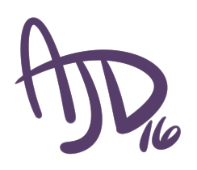

Please read through this. If you agree to my TOS then continue to contact me with your commission inquiry.
First of all I would like to thank you for taking the time to look at my artwork and consider hiring me! All of the information below is just a list of general information and some of my personal policies with how I work. I hope you can find them agreeable and we can work together to make your imagination a creation!
I am responsible as the artist in charge of your commission to have the order done in a timely manner. To make sure the quality of the product meets not only my standards, but yours as well. I am here to help bring a little bit of your creative mind into the world and give you a positive experience. I, or an associate, will be available should a problem come up with your order. If there are any delays with the project or if I am unable to continue working on it for any reason I will contact you and make sure something is arranged to make both parties are happy and settled. I do reserve the right to refuse service of any commission for any reason without explanation. Should this occur during the progress of a commission order, a refund will be discussed.
You are responsible for reading and understanding the TOS. If you have any questions at all, please do not hesitate to ask. You must communicate your project ideas to me in a clear, polite, and timely manner and provide any necessary reference materials. By commissioning me, you agree to have read and understand these terms of service.
Before you contact me for a commission please review my art portfolio to make sure I can offer you the best creative service that you are looking for. If you see I don’t draw a lot of what you have in mind, please ask me about my feelings and skill level with certain subjects. I am more than willing to practice up on certain art subjects to better meet your needs. If you do not have a clear idea of what exactly you would like to order from me, no big deal! I can work with you to review your characters or project and help flesh out any concepts you have. We can work together to make sure your order is custom tailered to what you’re looking for. Part of this process includes me providing watermarked example sketches or thumbnails for your review. If you are providing reference images I please ask for clean, high-quality, high-resolution images to work from if possible. Tiny fuzzy images are tough on everyone!
After the commission is complete, you are allowed to have the watermark-free copy at full resolution. If you would like the PSD as well, i will provide it for an extra fee. You will be allowed to upload it where ever you please so long as you credit back to me as the artist and provide a link the Clover Coin Designs website. You may use the artwork on any physical products for your personal use only. Under no circumstances are you permitted to resell commissioned artwork. Absolutely no commercial use of my art is permitted unless it’s been worked out ahead of time. Commercial commissions may be discussed during the inquiry process.
When you adopt a character from me that is not part of one of my closed species, that character concept now belongs to you. You can do whatever you please with it, change it’s name to whatever you want, modify it’s designs as much as you please. Once you buy it, it’s completely yours. All adoptable payments are nonrefundable. You may resell adoptables at the same price that you purchased the adoptable from me. Any species-specific terms of use replace and supercede these terms.
We will keep all digital commissions and PSD of the commissions for exactly 90 days after completion. It is your responsibility as the customer to claim and safely keep the commission deliverables after it has been completed.
I am fairly comfortable drawing many things, but some of the items listed before are out of my comfort zone and I please ask you to respect that.
I will not draw or contribute to any work that is meant to spread hate or discrimination against any individual, character, or group for any reason. This includes but is not limited to works that are homophobic, racist, ableist, political, and religiously discriminating.
I will not draw any content that violates any US or state laws.
I would prefer all major edits be made in the sketching and planning stage of the commission. I will redraw the sketch twice if need be, both will be watermarked. Minor edits can be made in the line art phase of the commission. After that I will assume there are no other revisions needed and continue to finish the project. If the project is finished and you are not satisfied, you may ask for more work to be done on it. All work done to acommodate modifications after the line-art stage will be billed at the full hourly rate.
All prints, posters, or other physical commission orders will be packaged with care and shipped via a major delivery service (eg: USPS, UPS, FedEx). Every package that we send out will be insured for it’s full cost as part of the shipping and handling fee. If you would not like to have insurance on your package please contact us, in that case we will not be held responsible for any lost or damaged packages.
As a general rule, I charge $30 USD an hour for my work. The commission price guide estimates are based off of this rate. Online commissions must be paid via PayPal. You will be invoiced via PayPal for commission payments. Payments are due within 7 days of invoicing unless otherwise discussed with me. I will accept Cash Commissions at Conventions or in person only.
Please be aware, I do require all commissions under $30 USD to be paid in full up front. More significant projects will require a $30 USD down payment, when the order is completed, and shown with watermark I will require the rest of the payment. The faster the payment arrives the faster I am able to get to work on your commission.
If you would like to commission me but cannot afford the entire cost of the project up front, I have no problem with working out a payment plan with you. The commission will be completed step by step as payments follow through, do not expect the commission to be completed and ready for pick up until the commission is paid in full. The down payment of $30 USD still applies here if it is a larger commission order.
If for any reason you are dissatisfied with your commission I will issue a partial refund. If the project has not been started yet you will be refunded in full with the exception of transaction fees. If I have started your project but not yet completed it, you will be refunded all but the cost of the work that has already been done. If the project is completed, refunds will be discussed on a case-by-case basis. It is my goal to make your experience a positive one.
When commissioning me, I will need the image references no later than a week (7 days) after payment has been confirmed. The sooner I receive payment and solid references the sooner I will be able to complete your commission. If you are going to be away for any reason, please stay in contact with me or let me know in advance to put your project on hold until you return. If I do not hear back from you in 90 days at any point during the process, I will consider the commission abandoned and terminated to make room for new projects. You will be invoiced at that time for the full number of hours invested in the project.
As some of you may or may not know, I suffer from multiple chronic illnesses. The major one that affects my work is my severe Rheumatoid Arthritis which rests mostly in my hands and knees. During the winter months in North Dakota I grow considerably ill very often. I will often need to pace myself and take more time with projects. If I do grow ill enough at any point that it affects my workload I will contact you to update you about your order and the time it might take for it to be completed. My health comes first before any project, it is very important that I do not overwork myself because it wears me down even worse and makes me even sicker for much longer periods of time. Please understand I do want to complete your orders as quickly as possible, but sometimes I must have forced bed rest for a few days to recover. I just don’t have as many spoons as I use to. If this does affect your order, please contact me! We can work something out to benefit us both.
By commissioning me, you have agreed that you have read the Terms of Service and find them agreeable. I hope we can work together soon to make your imagination into a reality!
